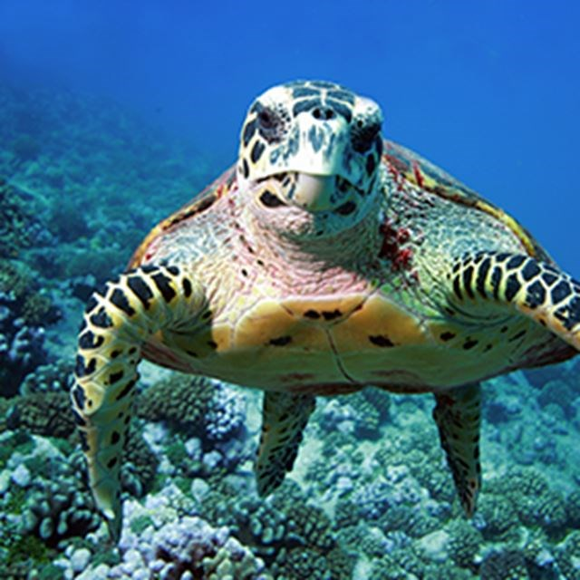
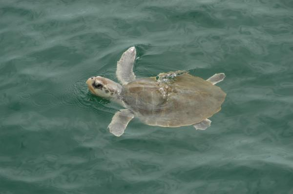
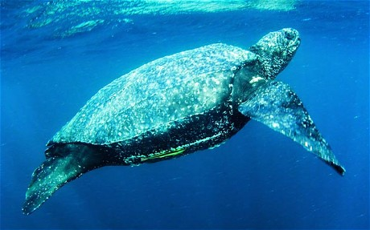
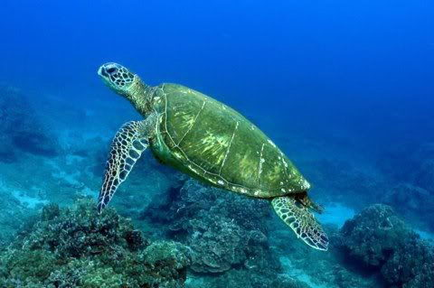
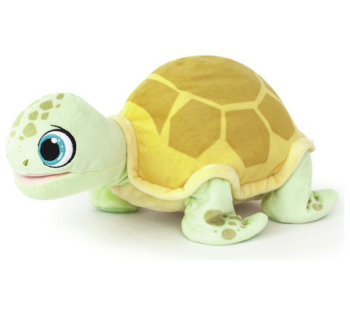

History of Turtles
Turtles are belived to have existed in the late Triassic Period of the Mesozoic era, about 215-220 million years ago. Turtles are known to be one of the oldest creatures on Earth before Dinosaurs with the most ancient fossils found in Germany.
To find out more information: Click Here
Over the Ocean: Turtle Species
It has been estimated that there are around over 300 specied of Turtles, however there 7 well-known Sea Turtle Species. We will be introducing four species shown below:
Sea Turtle
Kemp's Ridley
Leatherback Sea Turtle
Green Turtle
Did you know?
- Turtles can live in almost in any climate like underwater and on land
- Sea Turtle mainly live in the ocean, only visiting the nearby beaches to lay eggs
- The smalllest turtle has been recorded to weight around 142grams and one of the largest turtle species weighs around 680grams
- Some turtles are vegeterians eating only grass and algae whereas other turtles are omnivores eating fishes in the ocean
- Although turtles may travel with other turtles, they do not interact or socialise with other turtles
- Turtles can live to around 80 years with some of the larger turtles living for around 200 years!
- If you would like more information, please visit the following website: Live Science
- The below video has many more fascinating facts to watch!
Experimenting with modal image

×